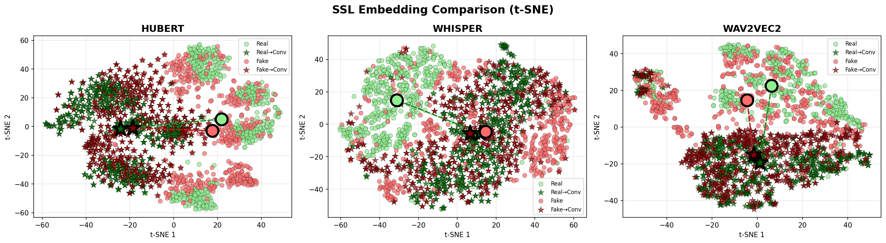
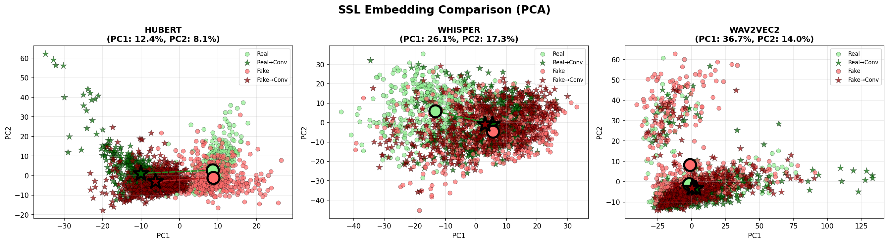
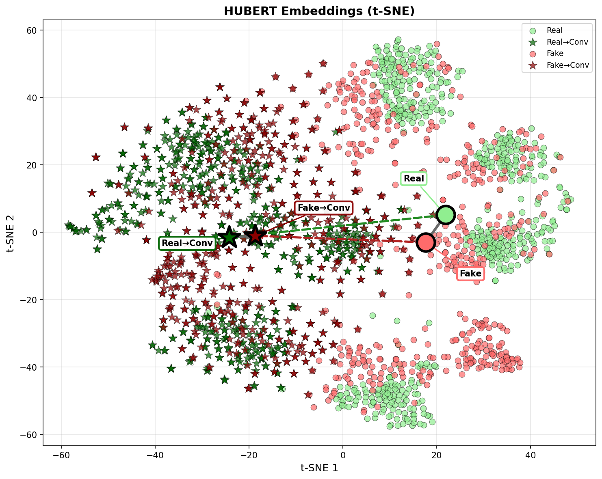
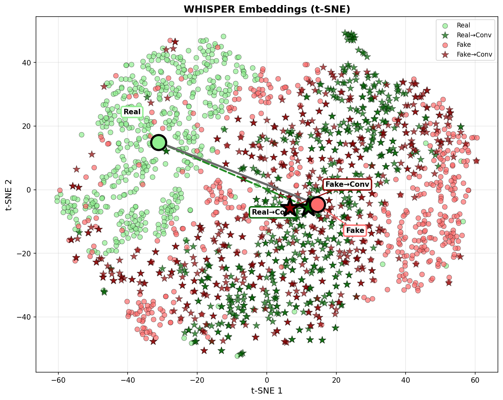
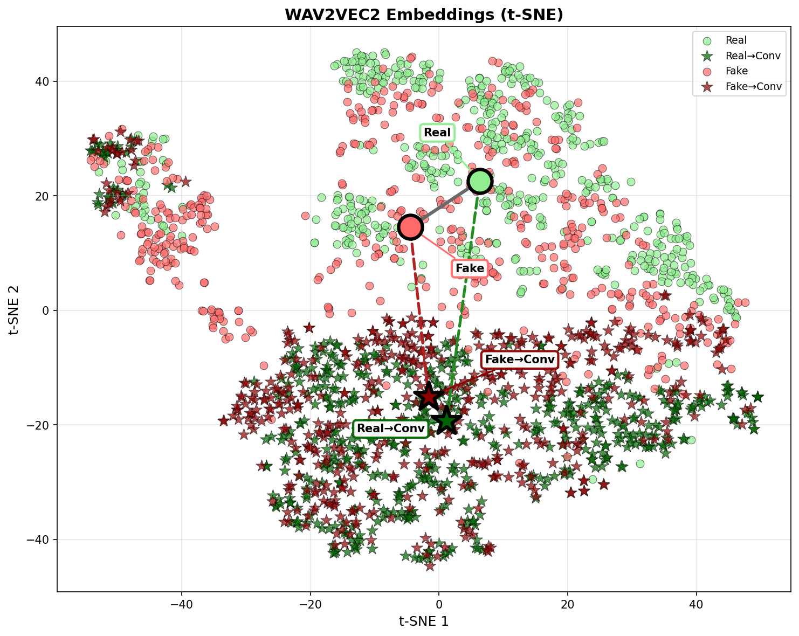
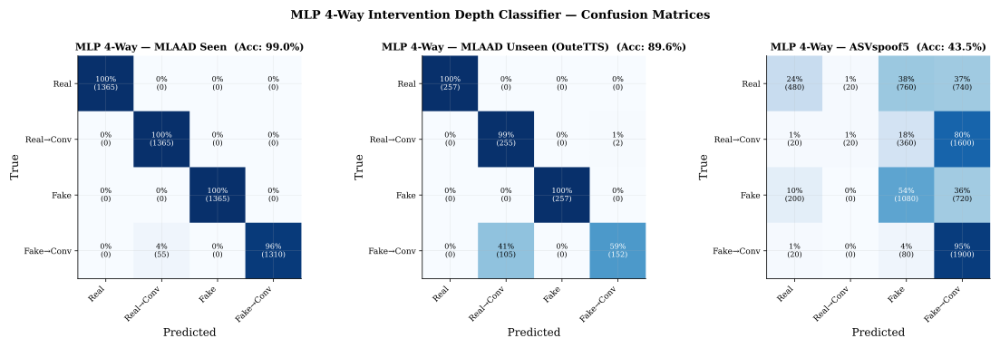
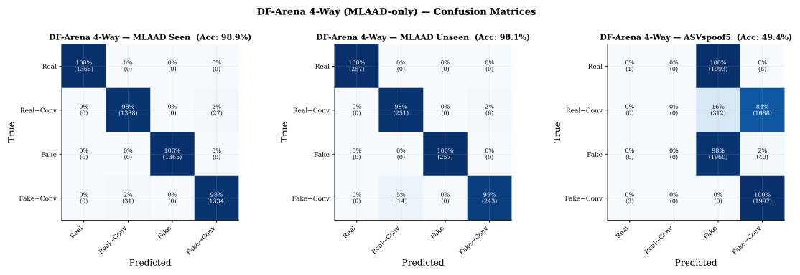
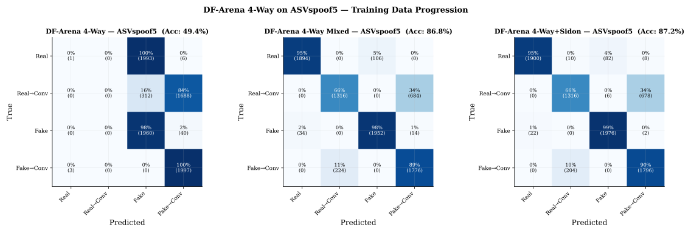
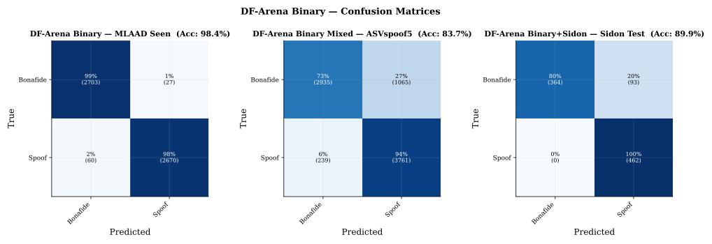

Decomposing speech authenticity into source identity and processing mediation
| Class | Label | Description |
|---|---|---|
| Real | 0 | Original human recordings — no processing |
| Real→Conv | 1 | Human audio processed through voice conversion |
| Fake | 2 | Raw TTS output — synthesis only |
| Fake→Conv | 3 | TTS output + voice conversion — two layers of processing |
All data available on Zenodo:
https://zenodo.org/records/18803182
t-SNE and PCA projections of the SSL embeddings used for classification. Three models — HuBERT-base (768-dim), Whisper-small (768-dim), and Wav2Vec2 XLS-R 1B (1280-dim) — are concatenated to form 2816-dim representations.





Trained on concatenated HuBERT + Whisper + Wav2Vec2 XLS-R 1B embeddings (2816-dim). Evaluated on seen architectures, unseen OuteTTS, and cross-domain ASVspoof5.

DF-Arena 1B fine-tuned from binary to 4-way classification on MLAAD. On ASVspoof5, the model classifies nearly everything as Fake or Fake→Conv.

Adding ASVspoof5 to the training mix recovers real speech recognition (0.1% → 94.7%) and reduces source EER from 46.3% to 11.8%. Adding Sidon further stabilizes generalization.

